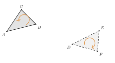
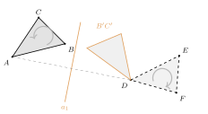
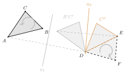
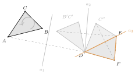

Aufgabe 4.1
- Wie viele Spiegelungen sind notwendig, um ein Dreieck $ABC$ in
der nachfolgenden Zeichnung auf seinen kongruenten Partner $DEF$
abzubilden?
\[A\mapsto D,\;\;B\mapsto E,\;\;C\mapsto F\]
Führen Sie die Spiegelungen in GeoGebra aus.
- Finden Sie eine Strategie die für alle Dreiecke funktioniert? Wieviele Spiegelungen sind dann maximal notwendig?
Womit anfangen? Vergleichen Sie die beiden Dreiecke, bevor Sie eine Achse zeichnen.
- In welchem Sinn läuft $A \to B \to C$, in welchem $D \to E \to F$?
- Was macht eine einzelne Spiegelung mit dem Umlaufsinn?
- Welche Achse bringt einen bestimmten Punkt genau auf einen anderen?
Gegeben: $A(1|1)$, $B(5|2)$, $C(3|4)$ und das kongruente Dreieck $D(10|{-}0.76)$, $E(13.68|1.09)$, $F(13.47|{-}1.73)$.
Schritt 1: den Umlaufsinn ansehen

$A \to B \to C$ läuft im Gegenuhrzeigersinn, $D \to E \to F$ im Uhrzeigersinn — die Pfeile zeigen es. Der Umlaufsinn ist also umgekehrt, und damit ist die Zahl der Spiegelungen ungerade: eine oder drei. Eine einzige käme nur in Frage, wenn alle drei Mittelsenkrechten von $\overline{AD}$, $\overline{BE}$ und $\overline{CF}$ dieselbe Gerade wären; das sind sie nicht. Also drei. Die folgenden Schritte führen sie vor.
Schritt 2: $A$ auf $D$ spiegeln

Welche Achse: die Mittelsenkrechte $a_1$ von $\overline{AD}$ — sie ist die einzige Gerade, an der $A$ nach $D$ fällt. Danach liegt schon ein Punkt richtig; $B$ und $C$ wandern mit nach $B'$ und $C'$.
Schritt 3: $B'$ auf $E$ spiegeln

Welche Achse: die Mittelsenkrechte $a_2$ von $\overline{B'E}$. Das Entscheidende ist, dass sie durch $D$ geht: Weil $|DB'| = |AB| = |DE|$ ist, liegt $D$ von beiden Punkten gleich weit entfernt — und die Mittelsenkrechte ist genau der Ort dieser Punkte. Der zweite Schritt zerstört den ersten also nicht.
Schritt 4: $C''$ auf $F$ spiegeln

Welche Achse: die Gerade $a_3$ durch $D$ und $E$. Wieder bleiben die schon gesetzten Punkte liegen, denn beide liegen auf der Achse. Und $C''$ muss auf $F$ fallen: Beide haben von $D$ und von $E$ dieselben Abstände, also gibt es nur zwei mögliche Lagen — eine auf jeder Seite von $a_3$ — und die Spiegelung tauscht sie.
Ergebnis
Drei Spiegelungen, und sie sind hier auch nötig. Allgemein gilt: Eine Kongruenzabbildung der Ebene lässt sich immer durch höchstens drei Achsenspiegelungen darstellen — das ist der Dreispiegelungssatz, und die obige Kette ist zugleich sein Beweis.
Die Strategie für jedes Dreieck
- Mittelsenkrechte von $\overline{AD}$: bringt $A$ auf $D$.
- Mittelsenkrechte von $\overline{B'E}$: bringt $B'$ auf $E$ und lässt $D$ liegen.
- Gerade durch $D$ und $E$: bringt $C''$ auf $F$ und lässt $D$ und $E$ liegen.
Im Video: Etappe 2 · Dreispiegelungssatz bei 1:42